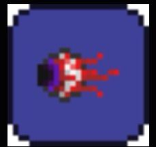
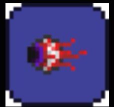

Yuval Taubes
Slaying The Eye of Cthulhu
Terraria is a 2d side scroller game where you explore the world, mine, and kill bosses. Terraria is a game that does not hold your hand and throws you into the deep end. This guide will take you through the proper preparations to kill your first boss, The Eye of Cthulhu.
Basic Tools
After Downloading the game, create a new character and world. Once you have spawned in, start deforesting the area with your axe. We need the wood to craft the following Items
- Wood Helmet
- Wood Breastplate
- Wood greaves
- Wooden Sword
- Platforms
- Starter Home
A good starter house Design
Finding A Cave
Once complete, start exploring to the left or right of the spawn area until you come upon an entrance into the ground. Inside the cave you will find some chests and pots, loot them and explore deeper.
Looting The Cave
As you explore deeper into the cave you should come across a railway system that extends to the left and right. Hover your mouse over the railroad and right-click, this will place you into a minecart. Pull out a torch and slowly explore to the left and right of the minecart track, you will usually find an Underground Cabin. Underground Cabins usually contain a gold chest, with some great early game loot. On your way to the Underground Cabin you may find some heart crystals, make sure to grab those.
An Underground cabin, and a couple of life crystals.
While exploring the cave our goals are to:
- Get more heart crystals
- Find 28 pieces of Gold/Platinum
- Find armour/accessories in chests
An example of what Gold/Platinum look like
Weapons
The weapon you are using is going to make a big difference in the amount of damage we deal. Using the gold/Platinum bow is a great way to make killing the boss easy. To make this bow we need to find a total of 28 pieces of gold ore or platinum ore. To make this bow, follow this list of instructions:
- Find the 28 pieces of gold/platinum
- Smelt the ore into bars (by using a furnace)
- Craft it into a bow using an anvil
An example of what Gold/Platinum Bow looks like
Ammo
Just as important as the bow, is the ammo. Frostburn arrows are the best choice for killing the Eye of Cthulhu. To make these arrows you are going to need:
- wood
- stone
- gel
- Ice block
Frostburn arrow stats
Armour
Armour is also an important part of the boss fight, however in this case just use what you can find. Aim for a total of 8 defences (counting accessories). The accessories for this fight don’t matter too much, just use the items with the best modifiers.
Potions
The only potions you need for this fight are the Healing potions, However Ironskin potions are highly recommended, for the extra defence. Thorns potions are also optional to help with the second phase of the fight.
The Stadium
A crucial part of this fight is the stadium, due to the speed the boss has in its second phase. It is best to have a long platform spanning the entire forest biome. By making it long it allows you to stay ahead of the eye, making it easy to hit your shots.
An example of a stadium
Spawning the Boss
To spawn the boss collect 9 lenses from demon eyes. Demon eyes only spawn during the night so just dedicate some time to farming them. To craft the Suspicious looking eye (the spawning item) go to a demon altar and then craft it within your inventory.
 

A demon altar, and the Suspicous Looking Eye
Fighting the Boss
The boss has 2 phases. During the first phase, the eye will send smaller demon eyes to come and attack you (They drop hearts when killed). Switch to a sword when the demon eyes get close, so you don’t get overwhelmed. In the second phase, the eye sheds its skin and reveals a mouth (It Enters its second phase at half health). In this interval the eye stays still, take advantage and do as much damage as possible. In the second phase the movement pattern changes, its speed also dramatically increases. This is where the long stadium comes into play, you should be able to run and dodge its quick attacks.
Phase 1 and 2 of the Eye of Cthulhu
Following this guide will make killing the Eye of Cthulhu a breeze, and officially starting your terraria journey. Depending on your world type your next boss is either the Brain of Cthulhu or the Eater of worlds. Both are exponentially more difficult than the boss you just fought, Good Luck Terrarian.